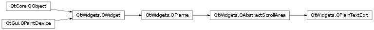

QPlainTextEdit¶
Synopsis¶
Functions¶
- def
anchorAt(pos) - def
backgroundVisible() - def
blockBoundingGeometry(block) - def
blockBoundingRect(block) - def
blockCount() - def
canPaste() - def
centerOnScroll() - def
contentOffset() - def
createStandardContextMenu() - def
createStandardContextMenu(position) - def
currentCharFormat() - def
cursorForPosition(pos) - def
cursorRect() - def
cursorRect(cursor) - def
cursorWidth() - def
document() - def
documentTitle() - def
ensureCursorVisible() - def
extraSelections() - def
find(exp[, options=QTextDocument.FindFlags()]) - def
find(exp[, options=QTextDocument.FindFlags()]) - def
firstVisibleBlock() - def
getPaintContext() - def
inputMethodQuery(query, argument) - def
isReadOnly() - def
isUndoRedoEnabled() - def
lineWrapMode() - def
maximumBlockCount() - def
mergeCurrentCharFormat(modifier) - def
moveCursor(operation[, mode=QTextCursor.MoveAnchor]) - def
overwriteMode() - def
placeholderText() - def
print_(printer) - def
setBackgroundVisible(visible) - def
setCenterOnScroll(enabled) - def
setCurrentCharFormat(format) - def
setCursorWidth(width) - def
setDocument(document) - def
setDocumentTitle(title) - def
setExtraSelections(selections) - def
setLineWrapMode(mode) - def
setMaximumBlockCount(maximum) - def
setOverwriteMode(overwrite) - def
setPlaceholderText(placeholderText) - def
setReadOnly(ro) - def
setTabChangesFocus(b) - def
setTabStopDistance(distance) - def
setTabStopWidth(width) - def
setTextCursor(cursor) - def
setTextInteractionFlags(flags) - def
setUndoRedoEnabled(enable) - def
setWordWrapMode(policy) - def
tabChangesFocus() - def
tabStopDistance() - def
tabStopWidth() - def
textCursor() - def
textInteractionFlags() - def
toPlainText() - def
wordWrapMode() - def
zoomInF(range)
Virtual functions¶
- def
canInsertFromMimeData(source) - def
createMimeDataFromSelection() - def
doSetTextCursor(cursor) - def
insertFromMimeData(source) - def
loadResource(type, name)
Slots¶
- def
appendHtml(html) - def
appendPlainText(text) - def
centerCursor() - def
clear() - def
copy() - def
cut() - def
insertPlainText(text) - def
paste() - def
redo() - def
selectAll() - def
setPlainText(text) - def
undo() - def
zoomIn([range=1]) - def
zoomOut([range=1])
Signals¶
- def
blockCountChanged(newBlockCount) - def
copyAvailable(b) - def
cursorPositionChanged() - def
modificationChanged(arg__1) - def
redoAvailable(b) - def
selectionChanged() - def
textChanged() - def
undoAvailable(b) - def
updateRequest(rect, dy)
Detailed Description¶
ThePySide2.QtWidgets.QPlainTextEditclass provides a widget that is used to edit and display plain text.
Introduction and Concepts¶
PySide2.QtWidgets.QPlainTextEditis an advanced viewer/editor supporting plain text. It is optimized to handle large documents and to respond quickly to user input.QPlainText uses very much the same technology and concepts as
PySide2.QtWidgets.QTextEdit, but is optimized for plain text handling.
PySide2.QtWidgets.QPlainTextEditworks on paragraphs and characters. A paragraph is a formatted string which is word-wrapped to fit into the width of the widget. By default when reading plain text, one newline signifies a paragraph. A document consists of zero or more paragraphs. Paragraphs are separated by hard line breaks. Each character within a paragraph has its own attributes, for example, font and color.The shape of the mouse cursor on a
PySide2.QtWidgets.QPlainTextEditisQt.IBeamCursorby default. It can be changed through thePySide2.QtWidgets.QAbstractScrollArea.viewport()‘s cursor property.
Using QPlainTextEdit as a Display Widget¶
The text is set or replaced using
PySide2.QtWidgets.QPlainTextEdit.setPlainText()which deletes the existing text and replaces it with the text passed toPySide2.QtWidgets.QPlainTextEdit.setPlainText().Text can be inserted using the
PySide2.QtGui.QTextCursorclass or using the convenience functionsPySide2.QtWidgets.QPlainTextEdit.insertPlainText(),PySide2.QtWidgets.QPlainTextEdit.appendPlainText()orPySide2.QtWidgets.QPlainTextEdit.paste().By default, the text edit wraps words at whitespace to fit within the text edit widget. The
PySide2.QtWidgets.QPlainTextEdit.setLineWrapMode()function is used to specify the kind of line wrap you want,WidgetWidthorNoWrapif you don’t want any wrapping. If you use word wrap to the widget’s widthWidgetWidth, you can specify whether to break on whitespace or anywhere withPySide2.QtWidgets.QPlainTextEdit.setWordWrapMode().The
PySide2.QtWidgets.QPlainTextEdit.find()function can be used to find and select a given string within the text.If you want to limit the total number of paragraphs in a
PySide2.QtWidgets.QPlainTextEdit, as it is for example useful in a log viewer, then you can use thePySide2.QtWidgets.QPlainTextEdit.maximumBlockCount()property. The combination ofPySide2.QtWidgets.QPlainTextEdit.setMaximumBlockCount()andPySide2.QtWidgets.QPlainTextEdit.appendPlainText()turnsPySide2.QtWidgets.QPlainTextEditinto an efficient viewer for log text. The scrolling can be reduced with thePySide2.QtWidgets.QPlainTextEdit.centerOnScroll()property, making the log viewer even faster. Text can be formatted in a limited way, either using a syntax highlighter (see below), or by appending html-formatted text withPySide2.QtWidgets.QPlainTextEdit.appendHtml(). WhilePySide2.QtWidgets.QPlainTextEditdoes not support complex rich text rendering with tables and floats, it does support limited paragraph-based formatting that you may need in a log viewer.
Read-only Key Bindings¶
When
PySide2.QtWidgets.QPlainTextEditis used read-only the key bindings are limited to navigation, and text may only be selected with the mouse:
Keypresses Action Qt.UpArrowMoves one line up. Qt.DownArrowMoves one line down. Qt.LeftArrowMoves one character to the left. Qt.RightArrowMoves one character to the right. PageUp Moves one (viewport) page up. PageDown Moves one (viewport) page down. Home Moves to the beginning of the text. End Moves to the end of the text. Alt+Wheel Scrolls the page horizontally (the Wheel is the mouse wheel). Ctrl+Wheel Zooms the text. Ctrl+A Selects all text.
Using QPlainTextEdit as an Editor¶
All the information about using
PySide2.QtWidgets.QPlainTextEditas a display widget also applies here.Selection of text is handled by the
PySide2.QtGui.QTextCursorclass, which provides functionality for creating selections, retrieving the text contents or deleting selections. You can retrieve the object that corresponds with the user-visible cursor using thePySide2.QtWidgets.QPlainTextEdit.textCursor()method. If you want to set a selection inPySide2.QtWidgets.QPlainTextEditjust create one on aPySide2.QtGui.QTextCursorobject and then make that cursor the visible cursor usingPySide2.QtWidgets.QWidget.setCursor(). The selection can be copied to the clipboard withPySide2.QtWidgets.QPlainTextEdit.copy(), or cut to the clipboard withPySide2.QtWidgets.QPlainTextEdit.cut(). The entire text can be selected usingPySide2.QtWidgets.QPlainTextEdit.selectAll().
PySide2.QtWidgets.QPlainTextEditholds aPySide2.QtGui.QTextDocumentobject which can be retrieved using thePySide2.QtWidgets.QPlainTextEdit.document()method. You can also set your own document object usingPySide2.QtWidgets.QPlainTextEdit.setDocument().PySide2.QtGui.QTextDocumentemits aPySide2.QtWidgets.QPlainTextEdit.textChanged()signal if the text changes and it also provides a isModified() function which will return true if the text has been modified since it was either loaded or since the last call to setModified with false as argument. In addition it provides methods for undo and redo.
Syntax Highlighting¶
Just likePySide2.QtWidgets.QTextEdit,PySide2.QtWidgets.QPlainTextEditworks together withPySide2.QtGui.QSyntaxHighlighter.
Editing Key Bindings¶
The list of key bindings which are implemented for editing:
Keypresses Action Backspace Deletes the character to the left of the cursor. Delete Deletes the character to the right of the cursor. Ctrl+C Copy the selected text to the clipboard. Ctrl+Insert Copy the selected text to the clipboard. Ctrl+K Deletes to the end of the line. Ctrl+V Pastes the clipboard text into text edit. Shift+Insert Pastes the clipboard text into text edit. Ctrl+X Deletes the selected text and copies it to the clipboard. Shift+Delete Deletes the selected text and copies it to the clipboard. Ctrl+Z Undoes the last operation. Ctrl+Y Redoes the last operation. LeftArrow Moves the cursor one character to the left. Ctrl+LeftArrow Moves the cursor one word to the left. RightArrow Moves the cursor one character to the right. Ctrl+RightArrow Moves the cursor one word to the right. UpArrow Moves the cursor one line up. Ctrl+UpArrow Moves the cursor one word up. DownArrow Moves the cursor one line down. Ctrl+Down Arrow Moves the cursor one word down. PageUp Moves the cursor one page up. PageDown Moves the cursor one page down. Home Moves the cursor to the beginning of the line. Ctrl+Home Moves the cursor to the beginning of the text. End Moves the cursor to the end of the line. Ctrl+End Moves the cursor to the end of the text. Alt+Wheel Scrolls the page horizontally (the Wheel is the mouse wheel). Ctrl+Wheel Zooms the text. To select (mark) text hold down the Shift key whilst pressing one of the movement keystrokes, for example, Shift+Right Arrow will select the character to the right, and Shift+Ctrl+Right Arrow will select the word to the right, etc.
Differences to QTextEdit¶
PySide2.QtWidgets.QPlainTextEditis a thin class, implemented by using most of the technology that is behindPySide2.QtWidgets.QTextEditandPySide2.QtGui.QTextDocument. Its performance benefits overPySide2.QtWidgets.QTextEditstem mostly from using a different and simplified text layout calledPySide2.QtWidgets.QPlainTextDocumentLayouton the text document (seeQTextDocument.setDocumentLayout()). The plain text document layout does not support tables nor embedded frames, and replaces a pixel-exact height calculation with a line-by-line respectively paragraph-by-paragraph scrolling approach . This makes it possible to handle significantly larger documents, and still resize the editor with line wrap enabled in real time. It also makes for a fast log viewer (seePySide2.QtWidgets.QPlainTextEdit.setMaximumBlockCount()).
-
class
PySide2.QtWidgets.QPlainTextEdit([parent=nullptr])¶ -
class
PySide2.QtWidgets.QPlainTextEdit(text[, parent=nullptr]) Parameters: - text – unicode
- parent –
PySide2.QtWidgets.QWidget
Constructs an empty
PySide2.QtWidgets.QPlainTextEditwith parentparent.Constructs a
PySide2.QtWidgets.QPlainTextEditwith parentparent. The text edit will display the plain texttext.
-
PySide2.QtWidgets.QPlainTextEdit.LineWrapMode¶ Constant Description QPlainTextEdit.NoWrap QPlainTextEdit.WidgetWidth
-
PySide2.QtWidgets.QPlainTextEdit.anchorAt(pos)¶ Parameters: pos – PySide2.QtCore.QPointReturn type: unicode Returns the reference of the anchor at position
pos, or an empty string if no anchor exists at that point.
-
PySide2.QtWidgets.QPlainTextEdit.appendHtml(html)¶ Parameters: html – unicode Appends a new paragraph with
htmlto the end of the text edit.
-
PySide2.QtWidgets.QPlainTextEdit.appendPlainText(text)¶ Parameters: text – unicode Appends a new paragraph with
textto the end of the text edit.
-
PySide2.QtWidgets.QPlainTextEdit.backgroundVisible()¶ Return type: PySide2.QtCore.bool
-
PySide2.QtWidgets.QPlainTextEdit.blockBoundingGeometry(block)¶ Parameters: block – PySide2.QtGui.QTextBlockReturn type: PySide2.QtCore.QRectFReturns the bounding rectangle of the text
blockin content coordinates. Translate the rectangle with thePySide2.QtWidgets.QPlainTextEdit.contentOffset()to get visual coordinates on the viewport.
-
PySide2.QtWidgets.QPlainTextEdit.blockBoundingRect(block)¶ Parameters: block – PySide2.QtGui.QTextBlockReturn type: PySide2.QtCore.QRectFReturns the bounding rectangle of the text
blockin the block’s own coordinates.
-
PySide2.QtWidgets.QPlainTextEdit.blockCount()¶ Return type: PySide2.QtCore.int
-
PySide2.QtWidgets.QPlainTextEdit.blockCountChanged(newBlockCount)¶ Parameters: newBlockCount – PySide2.QtCore.int
-
PySide2.QtWidgets.QPlainTextEdit.canInsertFromMimeData(source)¶ Parameters: source – PySide2.QtCore.QMimeDataReturn type: PySide2.QtCore.boolThis function returns
trueif the contents of the MIME data object, specified bysource, can be decoded and inserted into the document. It is called for example when during a drag operation the mouse enters this widget and it is necessary to determine whether it is possible to accept the drag.
-
PySide2.QtWidgets.QPlainTextEdit.canPaste()¶ Return type: PySide2.QtCore.boolReturns whether text can be pasted from the clipboard into the textedit.
-
PySide2.QtWidgets.QPlainTextEdit.centerCursor()¶ Scrolls the document in order to center the cursor vertically.
-
PySide2.QtWidgets.QPlainTextEdit.centerOnScroll()¶ Return type: PySide2.QtCore.bool
-
PySide2.QtWidgets.QPlainTextEdit.clear()¶ Deletes all the text in the text edit.
Note that the undo/redo history is cleared by this function.
-
PySide2.QtWidgets.QPlainTextEdit.contentOffset()¶ Return type: PySide2.QtCore.QPointFReturns the content’s origin in viewport coordinates.
The origin of the content of a plain text edit is always the top left corner of the first visible text block. The content offset is different from (0,0) when the text has been scrolled horizontally, or when the first visible block has been scrolled partially off the screen, i.e. the visible text does not start with the first line of the first visible block, or when the first visible block is the very first block and the editor displays a margin.
-
PySide2.QtWidgets.QPlainTextEdit.copy()¶ Copies any selected text to the clipboard.
-
PySide2.QtWidgets.QPlainTextEdit.copyAvailable(b)¶ Parameters: b – PySide2.QtCore.bool
-
PySide2.QtWidgets.QPlainTextEdit.createMimeDataFromSelection()¶ Return type: PySide2.QtCore.QMimeDataThis function returns a new MIME data object to represent the contents of the text edit’s current selection. It is called when the selection needs to be encapsulated into a new
PySide2.QtCore.QMimeDataobject; for example, when a drag and drop operation is started, or when data is copied to the clipboard.If you reimplement this function, note that the ownership of the returned
PySide2.QtCore.QMimeDataobject is passed to the caller. The selection can be retrieved by using thePySide2.QtWidgets.QPlainTextEdit.textCursor()function.
-
PySide2.QtWidgets.QPlainTextEdit.createStandardContextMenu(position)¶ Parameters: position – PySide2.QtCore.QPointReturn type: PySide2.QtWidgets.QMenuThis function creates the standard context menu which is shown when the user clicks on the text edit with the right mouse button. It is called from the default
PySide2.QtWidgets.QPlainTextEdit.contextMenuEvent()handler and it takes thepositionin document coordinates where the mouse click was. This can enable actions that are sensitive to the position where the user clicked. The popup menu’s ownership is transferred to the caller.
-
PySide2.QtWidgets.QPlainTextEdit.createStandardContextMenu() Return type: PySide2.QtWidgets.QMenuThis function creates the standard context menu which is shown when the user clicks on the text edit with the right mouse button. It is called from the default
PySide2.QtWidgets.QPlainTextEdit.contextMenuEvent()handler. The popup menu’s ownership is transferred to the caller.We recommend that you use the (
PySide2.QtCore.QPoint) version instead which will enable the actions that are sensitive to where the user clicked.
-
PySide2.QtWidgets.QPlainTextEdit.currentCharFormat()¶ Return type: PySide2.QtGui.QTextCharFormatReturns the char format that is used when inserting new text.
-
PySide2.QtWidgets.QPlainTextEdit.cursorForPosition(pos)¶ Parameters: pos – PySide2.QtCore.QPointReturn type: PySide2.QtGui.QTextCursorreturns a
PySide2.QtGui.QTextCursorat positionpos(in viewport coordinates).
-
PySide2.QtWidgets.QPlainTextEdit.cursorPositionChanged()¶
-
PySide2.QtWidgets.QPlainTextEdit.cursorRect()¶ Return type: PySide2.QtCore.QRectreturns a rectangle (in viewport coordinates) that includes the cursor of the text edit.
-
PySide2.QtWidgets.QPlainTextEdit.cursorRect(cursor) Parameters: cursor – PySide2.QtGui.QTextCursorReturn type: PySide2.QtCore.QRectreturns a rectangle (in viewport coordinates) that includes the
cursor.
-
PySide2.QtWidgets.QPlainTextEdit.cursorWidth()¶ Return type: PySide2.QtCore.int
-
PySide2.QtWidgets.QPlainTextEdit.cut()¶ Copies the selected text to the clipboard and deletes it from the text edit.
If there is no selected text nothing happens.
-
PySide2.QtWidgets.QPlainTextEdit.doSetTextCursor(cursor)¶ Parameters: cursor – PySide2.QtGui.QTextCursorThis provides a hook for subclasses to intercept cursor changes.
-
PySide2.QtWidgets.QPlainTextEdit.document()¶ Return type: PySide2.QtGui.QTextDocumentReturns a pointer to the underlying document.
-
PySide2.QtWidgets.QPlainTextEdit.documentTitle()¶ Return type: unicode
-
PySide2.QtWidgets.QPlainTextEdit.ensureCursorVisible()¶ Ensures that the cursor is visible by scrolling the text edit if necessary.
-
PySide2.QtWidgets.QPlainTextEdit.extraSelections()¶ Return type: Returns previously set extra selections.
-
PySide2.QtWidgets.QPlainTextEdit.find(exp[, options=QTextDocument.FindFlags()])¶ Parameters: - exp –
PySide2.QtCore.QRegExp - options –
PySide2.QtGui.QTextDocument.FindFlags
Return type: PySide2.QtCore.boolThis is an overloaded function.
Finds the next occurrence, matching the regular expression,
exp, using the givenoptions. TheQTextDocument.FindCaseSensitivelyoption is ignored for this overload, useQRegExp.caseSensitivityinstead.Returns
trueif a match was found and changes the cursor to select the match; otherwise returnsfalse.- exp –
-
PySide2.QtWidgets.QPlainTextEdit.find(exp[, options=QTextDocument.FindFlags()]) Parameters: - exp – unicode
- options –
PySide2.QtGui.QTextDocument.FindFlags
Return type: PySide2.QtCore.boolFinds the next occurrence of the string,
exp, using the givenoptions. Returnstrueifexpwas found and changes the cursor to select the match; otherwise returnsfalse.
-
PySide2.QtWidgets.QPlainTextEdit.firstVisibleBlock()¶ Return type: PySide2.QtGui.QTextBlockReturns the first visible block.
-
PySide2.QtWidgets.QPlainTextEdit.getPaintContext()¶ Return type: PySide2.QtGui.QAbstractTextDocumentLayout::PaintContextReturns the paint context for the
PySide2.QtWidgets.QAbstractScrollArea.viewport(), useful only when reimplementingPySide2.QtWidgets.QPlainTextEdit.paintEvent().
-
PySide2.QtWidgets.QPlainTextEdit.inputMethodQuery(query, argument)¶ Parameters: - query –
PySide2.QtCore.Qt.InputMethodQuery - argument – object
Return type: - query –
-
PySide2.QtWidgets.QPlainTextEdit.insertFromMimeData(source)¶ Parameters: source – PySide2.QtCore.QMimeDataThis function inserts the contents of the MIME data object, specified by
source, into the text edit at the current cursor position. It is called whenever text is inserted as the result of a clipboard paste operation, or when the text edit accepts data from a drag and drop operation.
-
PySide2.QtWidgets.QPlainTextEdit.insertPlainText(text)¶ Parameters: text – unicode Convenience slot that inserts
textat the current cursor position.It is equivalent to
edit.textCursor().insertText(text)
-
PySide2.QtWidgets.QPlainTextEdit.isReadOnly()¶ Return type: PySide2.QtCore.bool
-
PySide2.QtWidgets.QPlainTextEdit.isUndoRedoEnabled()¶ Return type: PySide2.QtCore.bool
-
PySide2.QtWidgets.QPlainTextEdit.lineWrapMode()¶ Return type: PySide2.QtWidgets.QPlainTextEdit.LineWrapMode
-
PySide2.QtWidgets.QPlainTextEdit.loadResource(type, name)¶ Parameters: - type –
PySide2.QtCore.int - name –
PySide2.QtCore.QUrl
Return type: Loads the resource specified by the given
typeandname.This function is an extension of
QTextDocument.loadResource().See also
QTextDocument.loadResource()- type –
-
PySide2.QtWidgets.QPlainTextEdit.maximumBlockCount()¶ Return type: PySide2.QtCore.int
-
PySide2.QtWidgets.QPlainTextEdit.mergeCurrentCharFormat(modifier)¶ Parameters: modifier – PySide2.QtGui.QTextCharFormatMerges the properties specified in
modifierinto the current character format by callingQTextCursor.mergeCharFormaton the editor’s cursor. If the editor has a selection then the properties ofmodifierare directly applied to the selection.See also
QTextCursor.mergeCharFormat()
-
PySide2.QtWidgets.QPlainTextEdit.modificationChanged(arg__1)¶ Parameters: arg__1 – PySide2.QtCore.bool
-
PySide2.QtWidgets.QPlainTextEdit.moveCursor(operation[, mode=QTextCursor.MoveAnchor])¶ Parameters: - operation –
PySide2.QtGui.QTextCursor.MoveOperation - mode –
PySide2.QtGui.QTextCursor.MoveMode
Moves the cursor by performing the given
operation.If
modeisQTextCursor.KeepAnchor, the cursor selects the text it moves over. This is the same effect that the user achieves when they hold down the Shift key and move the cursor with the cursor keys.See also
QTextCursor.movePosition()- operation –
-
PySide2.QtWidgets.QPlainTextEdit.overwriteMode()¶ Return type: PySide2.QtCore.bool
-
PySide2.QtWidgets.QPlainTextEdit.paste()¶ Pastes the text from the clipboard into the text edit at the current cursor position.
If there is no text in the clipboard nothing happens.
To change the behavior of this function, i.e. to modify what
PySide2.QtWidgets.QPlainTextEditcan paste and how it is being pasted, reimplement the virtualPySide2.QtWidgets.QPlainTextEdit.canInsertFromMimeData()andPySide2.QtWidgets.QPlainTextEdit.insertFromMimeData()functions.
-
PySide2.QtWidgets.QPlainTextEdit.placeholderText()¶ Return type: unicode
-
PySide2.QtWidgets.QPlainTextEdit.print_(printer)¶ Parameters: printer – PySide2.QtGui.QPagedPaintDeviceConvenience function to print the text edit’s document to the given
printer. This is equivalent to calling the print method on the document directly except that this function also supportsQPrinter.Selectionas print range.See also
QTextDocument.print()
-
PySide2.QtWidgets.QPlainTextEdit.redo()¶ Redoes the last operation.
If there is no operation to redo, i.e. there is no redo step in the undo/redo history, nothing happens.
-
PySide2.QtWidgets.QPlainTextEdit.redoAvailable(b)¶ Parameters: b – PySide2.QtCore.bool
-
PySide2.QtWidgets.QPlainTextEdit.selectAll()¶ Selects all text.
-
PySide2.QtWidgets.QPlainTextEdit.selectionChanged()¶
-
PySide2.QtWidgets.QPlainTextEdit.setBackgroundVisible(visible)¶ Parameters: visible – PySide2.QtCore.bool
-
PySide2.QtWidgets.QPlainTextEdit.setCenterOnScroll(enabled)¶ Parameters: enabled – PySide2.QtCore.bool
-
PySide2.QtWidgets.QPlainTextEdit.setCurrentCharFormat(format)¶ Parameters: format – PySide2.QtGui.QTextCharFormatSets the char format that is be used when inserting new text to
formatby callingQTextCursor.setCharFormat()on the editor’s cursor. If the editor has a selection then the char format is directly applied to the selection.
-
PySide2.QtWidgets.QPlainTextEdit.setCursorWidth(width)¶ Parameters: width – PySide2.QtCore.int
-
PySide2.QtWidgets.QPlainTextEdit.setDocument(document)¶ Parameters: document – PySide2.QtGui.QTextDocumentMakes
documentthe new document of the text editor.The parent
PySide2.QtCore.QObjectof the provided document remains the owner of the object. If the current document is a child of the text editor, then it is deleted.The document must have a document layout that inherits
PySide2.QtWidgets.QPlainTextDocumentLayout(seeQTextDocument.setDocumentLayout()).
-
PySide2.QtWidgets.QPlainTextEdit.setDocumentTitle(title)¶ Parameters: title – unicode
-
PySide2.QtWidgets.QPlainTextEdit.setExtraSelections(selections)¶ Parameters: selections – This function allows temporarily marking certain regions in the document with a given color, specified as
selections. This can be useful for example in a programming editor to mark a whole line of text with a given background color to indicate the existence of a breakpoint.See also
QTextEdit.ExtraSelectionPySide2.QtWidgets.QPlainTextEdit.extraSelections()
-
PySide2.QtWidgets.QPlainTextEdit.setLineWrapMode(mode)¶ Parameters: mode – PySide2.QtWidgets.QPlainTextEdit.LineWrapMode
-
PySide2.QtWidgets.QPlainTextEdit.setMaximumBlockCount(maximum)¶ Parameters: maximum – PySide2.QtCore.int
-
PySide2.QtWidgets.QPlainTextEdit.setOverwriteMode(overwrite)¶ Parameters: overwrite – PySide2.QtCore.bool
-
PySide2.QtWidgets.QPlainTextEdit.setPlaceholderText(placeholderText)¶ Parameters: placeholderText – unicode
-
PySide2.QtWidgets.QPlainTextEdit.setPlainText(text)¶ Parameters: text – unicode Changes the text of the text edit to the string
text. Any previous text is removed.textis interpreted as plain text.Note that the undo/redo history is cleared by this function.
-
PySide2.QtWidgets.QPlainTextEdit.setReadOnly(ro)¶ Parameters: ro – PySide2.QtCore.bool
-
PySide2.QtWidgets.QPlainTextEdit.setTabChangesFocus(b)¶ Parameters: b – PySide2.QtCore.bool
-
PySide2.QtWidgets.QPlainTextEdit.setTabStopDistance(distance)¶ Parameters: distance – PySide2.QtCore.qreal
-
PySide2.QtWidgets.QPlainTextEdit.setTabStopWidth(width)¶ Parameters: width – PySide2.QtCore.int
-
PySide2.QtWidgets.QPlainTextEdit.setTextCursor(cursor)¶ Parameters: cursor – PySide2.QtGui.QTextCursorSets the visible
cursor.
-
PySide2.QtWidgets.QPlainTextEdit.setTextInteractionFlags(flags)¶ Parameters: flags – PySide2.QtCore.Qt.TextInteractionFlags
-
PySide2.QtWidgets.QPlainTextEdit.setUndoRedoEnabled(enable)¶ Parameters: enable – PySide2.QtCore.bool
-
PySide2.QtWidgets.QPlainTextEdit.setWordWrapMode(policy)¶ Parameters: policy – PySide2.QtGui.QTextOption.WrapMode
-
PySide2.QtWidgets.QPlainTextEdit.tabChangesFocus()¶ Return type: PySide2.QtCore.bool
-
PySide2.QtWidgets.QPlainTextEdit.tabStopDistance()¶ Return type: PySide2.QtCore.qreal
-
PySide2.QtWidgets.QPlainTextEdit.tabStopWidth()¶ Return type: PySide2.QtCore.int
-
PySide2.QtWidgets.QPlainTextEdit.textChanged()¶
-
PySide2.QtWidgets.QPlainTextEdit.textCursor()¶ Return type: PySide2.QtGui.QTextCursorReturns a copy of the
PySide2.QtGui.QTextCursorthat represents the currently visible cursor. Note that changes on the returned cursor do not affectPySide2.QtWidgets.QPlainTextEdit‘s cursor; usePySide2.QtWidgets.QPlainTextEdit.setTextCursor()to update the visible cursor.
-
PySide2.QtWidgets.QPlainTextEdit.textInteractionFlags()¶ Return type: PySide2.QtCore.Qt.TextInteractionFlags
-
PySide2.QtWidgets.QPlainTextEdit.toPlainText()¶ Return type: unicode Returns the text of the text edit as plain text.
See also
-
PySide2.QtWidgets.QPlainTextEdit.undo()¶ Undoes the last operation.
If there is no operation to undo, i.e. there is no undo step in the undo/redo history, nothing happens.
-
PySide2.QtWidgets.QPlainTextEdit.undoAvailable(b)¶ Parameters: b – PySide2.QtCore.bool
-
PySide2.QtWidgets.QPlainTextEdit.updateRequest(rect, dy)¶ Parameters: - rect –
PySide2.QtCore.QRect - dy –
PySide2.QtCore.int
- rect –
-
PySide2.QtWidgets.QPlainTextEdit.wordWrapMode()¶ Return type: PySide2.QtGui.QTextOption.WrapMode
-
PySide2.QtWidgets.QPlainTextEdit.zoomIn([range=1])¶ Parameters: range – PySide2.QtCore.intZooms in on the text by making the base font size
rangepoints larger and recalculating all font sizes to be the new size. This does not change the size of any images.
-
PySide2.QtWidgets.QPlainTextEdit.zoomInF(range)¶ Parameters: range – PySide2.QtCore.float
-
PySide2.QtWidgets.QPlainTextEdit.zoomOut([range=1])¶ Parameters: range – PySide2.QtCore.intThis is an overloaded function.
Zooms out on the text by making the base font size
rangepoints smaller and recalculating all font sizes to be the new size. This does not change the size of any images.
© 2018 The Qt Company Ltd. Documentation contributions included herein are the copyrights of their respective owners. The documentation provided herein is licensed under the terms of the GNU Free Documentation License version 1.3 as published by the Free Software Foundation. Qt and respective logos are trademarks of The Qt Company Ltd. in Finland and/or other countries worldwide. All other trademarks are property of their respective owners.